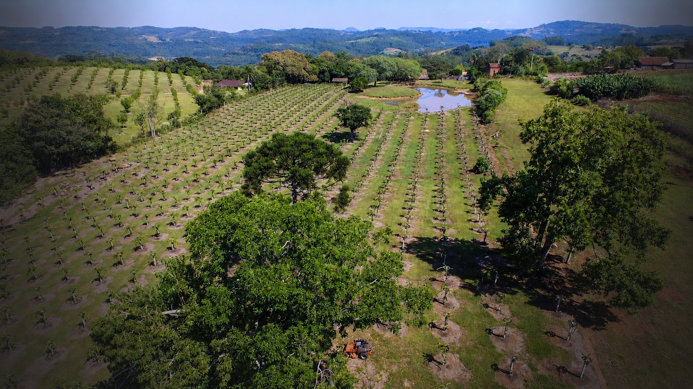

Hectares
Planted with pecan trees
03Our farm
Sustainability is at the heart of our farm. Of our 72 hectares, 35 are cultivated with pecans, while the remaining land is conserved to protect the natural environment.
Planted with pecan trees
Selected through research and testing
Rio Grande do Sul, Brazil
Part of the farm's long-term expansion plan
Before planting the first tree, we spent months researching the regions where pecan orchards could grow under the best possible conditions.
We selected land that did not require deforestation and began developing the farm with a clear plan: to create a productive orchard while preserving the surrounding natural environment.
El Porvenir Farm is located in Monte Alverne, near Santa Cruz do Sul, in Rio Grande do Sul, southern Brazil. The region's soil and climate provide favourable conditions for pecan cultivation.
After years of study and field testing, four pecan varieties were selected for their adaptability, productivity and resistance to diseases and pests.
Because we care deeply about the natural environment, we manage the land with attention to the soil, surrounding vegetation and local biodiversity.
Flowering plants are introduced throughout the fields to support bees and improve pollination. This creates a healthier ecosystem around the orchard while encouraging greater biological diversity.
As this project develops, El Porvenir also plans to produce its own raw honey directly from the farm.
